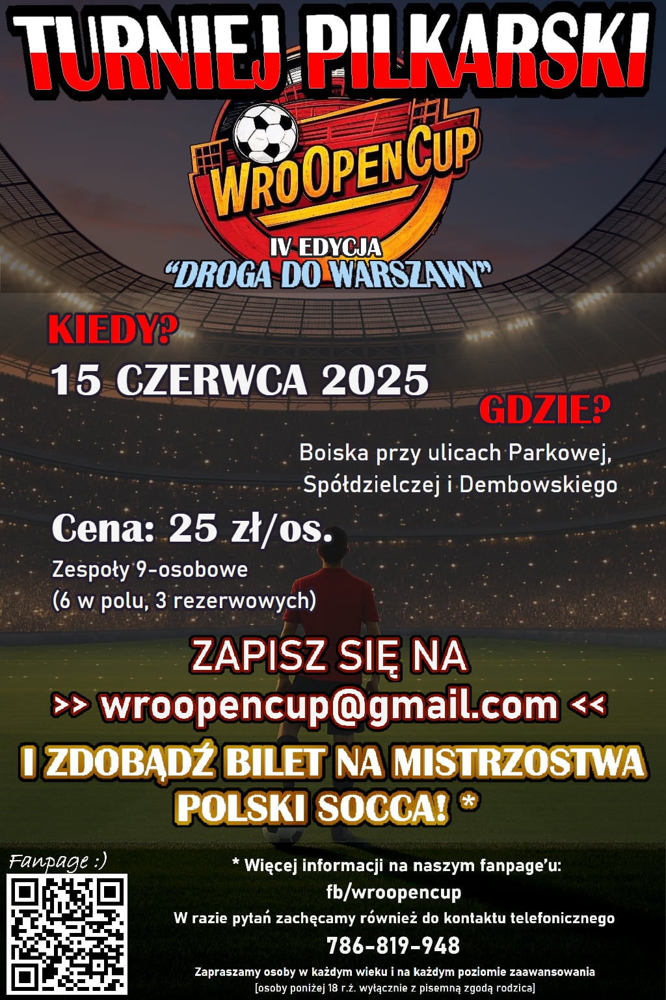
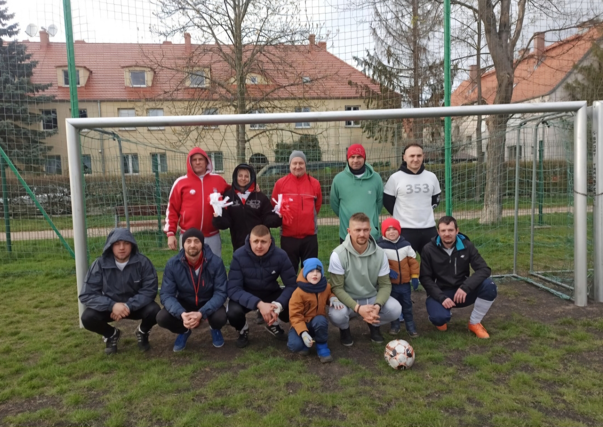

WroOpenCup edycja 4 "Ostatni krok do chwały!""
15 czerwca 2025 | Wrocław boiska przy ul. Spółdzielczej / Parkowej / Dembowskiego
Wpisowe: tylko 25 zł / osoba
Mecze prowadzone przez licencjonowanego sędziego!
To nie będzie zwykły turniej…
To będzie finałowa walka o marzenia.
Ostatni turniej eliminacyjny sezonu ostatnia szansa, by zdobyć bilet do wielkiego finału!
A tam czeka przepustka na turniej ogólnopolski!
Dlaczego warto być częścią tego dnia?
⚽ Piłka w czystej postaci pasja, drużyna, rywalizacja
⏱ Liczy się każdy mecz, każda sekunda, każda decyzja
🛡 Sędzia z licencją pełen profesjonalizm
🏆 Stawka większa niż puchar gra toczy się o coś więcej
Jeśli wierzysz, że piłka nożna to coś więcej niż tylko sport…
Jeśli masz w sobie ogień, który nie pozwala Ci odpuścić…
Jeśli chcesz zostawić coś po sobie…
To jest Twój turniej. Twój czas. Twój WroOpenCup.
Nie oglądaj zagraj. Nie czekaj zgłoś się.
Zrób coś, co zostanie w pamięci na długo.
⚽🔥 WROOPEN TO MY. WROCŁAW TO BOISKO. TY TO HISTORIA. 🔥⚽
WroOpenCup – Turniej dla Każdego!
WroOpenCup to niezwykły turniej piłkarski, w którym liczy się pasja, emocje i prawdziwa sportowa rywalizacja na najwyższym poziomie. To wydarzenie, które łączy wszystkich miłośników futbolu – niezależnie od wieku, umiejętności czy doświadczenia. U nas każdy zawodnik, niezależnie od tego, czy dopiero rozpoczyna swoją piłkarską przygodę, czy ma za sobą lata gry, może poczuć dreszczyk emocji, jaki towarzyszy finałom największych rozgrywek świata, takich jak Liga Mistrzów. WroOpenCup to nie tylko sport, ale również niezapomniana atmosfera, pełna pozytywnej energii, fair play i ducha zespołowej walki. To okazja do sprawdzenia swoich umiejętności, przeżycia niesamowitych chwil na boisku i stworzenia wspomnień, które zostaną z Tobą na zawsze. Niezależnie od wyniku, każdy uczestnik może liczyć na niesamowite emocje, zdrową rywalizację i świetną zabawę.
JAK SIĘ ZAPISAĆ?
Nie masz drużyny? Żaden problem! Wystarczy wypełnić krótką ankietę, a my znajdziemy dla Ciebie zespół i zadbamy o resztę. Ty przychodzisz, grasz i przeżywasz niezapomniane piłkarskie emocje. Zapisz swoją drużynę już teraz! Wyślij zgłoszenie na wroopencup@gmail.com i dołącz do gry!
Dołącz do nas i stań się częścią WroOpenCup – miejsca, gdzie liczy się gra, zabawa i sportowa adrenalina!
Ogromne dzięki dla wszystkich, którzy wzięli udział w 1. edycji turnieju WroOpenCup! To było naprawdę coś – emocje, rywalizacja i pasja na najwyższym poziomie! Gratulacje dla najlepszych drużyn!
🥇 TEAM MIKRO – zasłużony mistrz!
🥈 KS EMERYCI – świetna walka!
🥉 SMYKI AZAZELA – pokazali klasę!